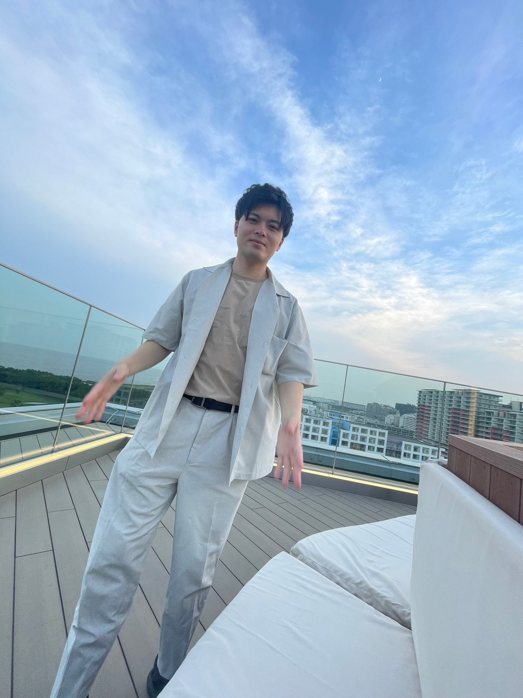
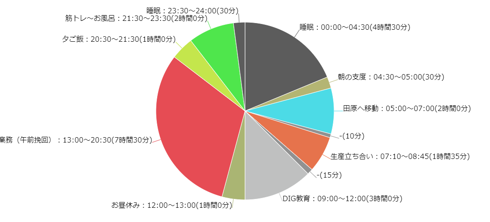

【自己紹介】

＜氏名＞鈴木拓哉
＜所属＞堤工場 車体製造技術部 シャシー技術室
＜業務＞シャシー設備生産準備、自働化アイテムの開発
＜趣味＞
＜嫌いなもの＞ソラマメ、得たいの知れない豆
自業務で課題に感じていること
（１）今回の受講目的：プログラミングの基本構造を学び、デジタル化導入のアイデアの実現性判断と導入促進
デジタルによる業務改廃をできるツール探し
（２）授業内容：
・HTML、CSS、JSを扱ったHP作成
・プログラミングの基礎構成やルール
＜演習でできるようになった内容一例＞
（３）今後の目標
・技連.CTS.wms等のchatGPT化
・熟練技術者の業務のコツや知識をＤＢ化＆アクセスを簡単にする
・仕様書のアシスタントAI
（４）謝辞
まずは生産が始まり、業務負荷が高い中、このような機会を許していただいた上司に感謝しております。
またGrメンバー、関係する部署の皆様のサポートがあって最後までやりきることができました。本当にありがとうございました。
最後に私はブートキャンプに参加して会社の余力づくりに貢献する開発していきたいと思っています
”おまけ” とある日の1日
